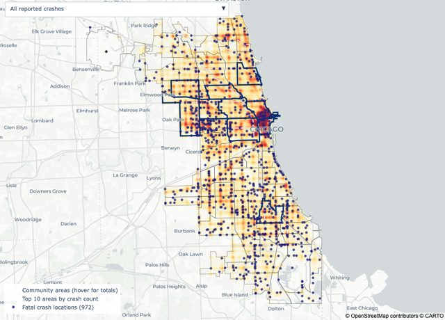
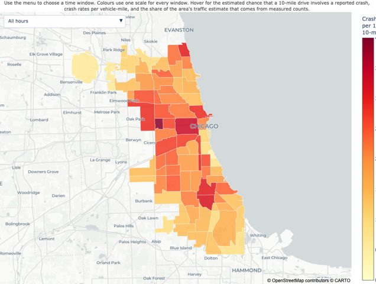
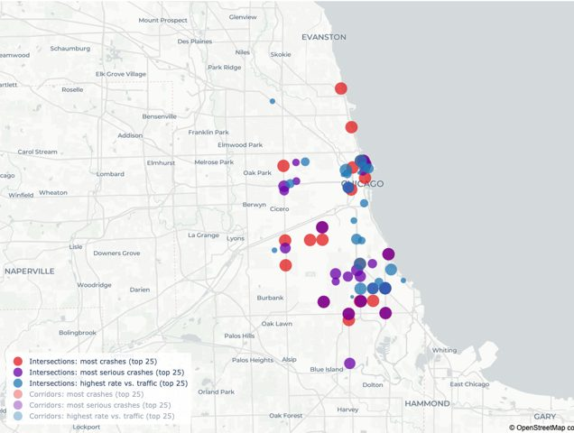
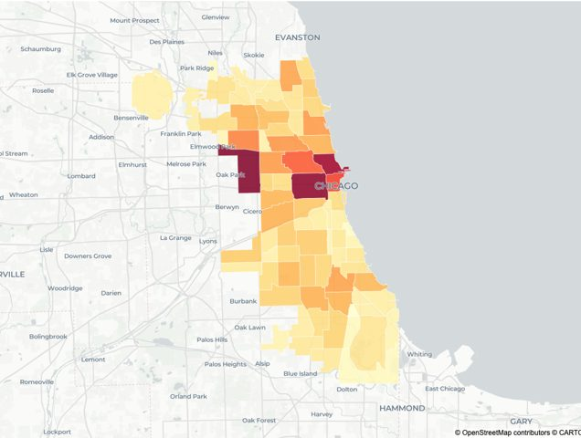
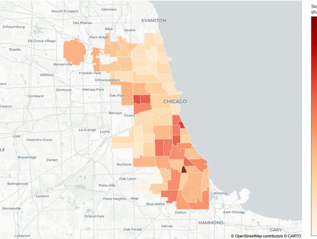

Data analysis project
Chicago Traffic Crashes, 2018–2025
Interactive maps from an analysis of 877,919 reported crashes. The analysis adds traffic volumes and mobility data to separate places and times with more crashes from places and times where each trip is more dangerous.
Project on GitHub Analysis notebook
Maps

Crash density and risk
Every geocoded crash, with views by severity and time of day, plus crash rates for corridors and intersections.

Risk by area and time of week
Estimated chance that a 10-mile drive involves a crash, for six time windows.

Intersection and corridor hot spots
The top 25 locations by crashes, serious crashes and crash rate relative to traffic.

Crashes by community area
Total reported crashes in each of Chicago's 77 community areas.

Serious-outcome share
Percentage of crashes involving a death or incapacitating injury, by community area.